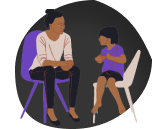
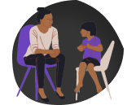
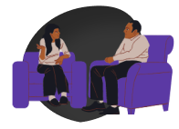
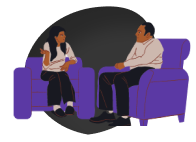
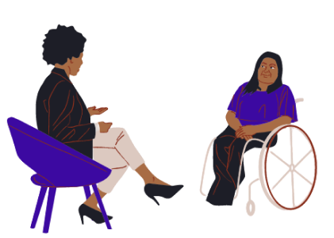
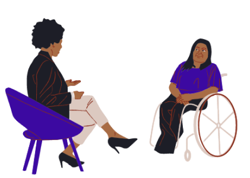
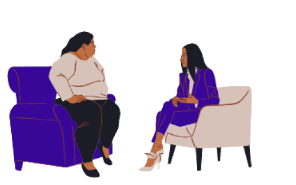
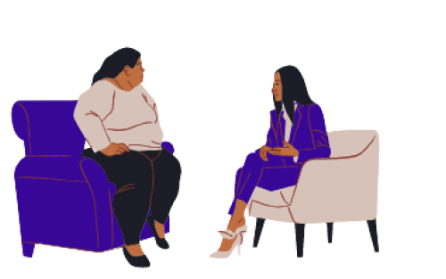

Sua saúde mental importa
Saúde mental é importante!
Temos especialistas dispostos a te ajudar.
 

Público diversificado
Visamos abranger todos os públicos de acordo com suas necessidades.
 

Especialistas qualificados
Nossos especialistas são treinados para atender da melhor forma os nossos pacientes.
Terapia no conforto da sua casa
Oferecemos aos nossos usuários a opção de consultas remotas.
Psicólogos
Oferecemos aos nossos usuários diversas especialidades psicológicas com o intuito de oferecer o tramento adequado para suas necessidades.
Psiquiatras
Oferecemos aos nossos usuários diversas especialidades psiquiátricas com o intuito de oferecer o tramento adequado para suas necessidades.
Preço Social
Nossos profissionais oferecem atendimento à preço social para pessoas de baixa-renda.

Recursos para nossos profissionais
Visando facilitar a organização e gestão do tempo dos especialistas, nosso site oferece diversos recursos como lista de pacientes, calendário de seções, prontuários dos pacientes, chat e consultas online por vídeo.
Recursos para nossos usuários
Oferecemos recursos para que nossos usuários também se organizem da melhor forma, como um calendário com o horário de suas seções, histórico de atendimentos, chat, receitas psiquiátricas eletrônicas e seções feitas online por meio de vídeo.
 

Recursos para nossos usuários
Oferecemos recursos para que nossos usuários também se organizem da melhor forma, como um calendário com o horário de suas seções, histórico de atendimentos, chat, receitas psiquiátricas eletrônicas e seções feitas online por meio de vídeo.
 

Notícias sobre saúde mental
Oferecemos um feed informativo sobre o mundo da saúde mental, com podcasts, artigos, notícias e recomendações de especialistas, assim nossos usuários poderam se manter informados sobre o assunto.

Escrupulosidade: o temor excessivo de não ser bom o suficiente
É uma forma menos conhecida de TOC (transtorno obsessivo-compulsivo), em que as pessoas ficam obcecadas com pensamentos invasivos indesejados que violam suas crenças morais ou religiosas.

Millennials e geração Z: por que são as gerações mais deprimidas?
Busca por assistência psicológica tem sido cada vez maior, assim como o uso de antidepressivos. Especialista aponta diferentes fatores para explicar esta situação.

Estudo mostra que droga psicodélica tem potencial para combate à depressão
Sob a depressão, o cérebro pode ficar preso a uma maneira negativa particular de pensar, diz pesquisador do Imperial College de Londres.


Brasil é o quinto país mais depressivo do mundo
Segundo a Organização Mundial de Saúde, o Brasil é considerado o país mais ansioso do mundo e o quinto mais depressivo. Mesmo assim, parte dessas pessoas não possuem assistência médica adequada quanto à saúde mental.
A importância da saúde mental
A saúde mental é uma parte essencial e complementar à manutenção das funções orgânicas. Sabendo-se disto, a promoção da saúde mental é essencial para que o indivíduo tenha a capacidade de executar suas habilidades pessoais e profissionais.

Os recursos oferecidos para os pacientes são incríveis e me ajudaram muito a me organizar para eu não me esquecer dos meus horários, fora que os profissionais são incríveis!!!

Larissa antec
Os recursos oferecidos para os pacientes são incríveis e me ajudaram muito a me organizar para eu não me esquecer dos meus horários, fora que os profissionais são incríveis!!!
Sabrina Luma
Os recursos oferecidos para os pacientes são incríveis e me ajudaram muito a me organizar para eu não me esquecer dos meus horários, fora que os profissionais são incríveis!!!

Especialista